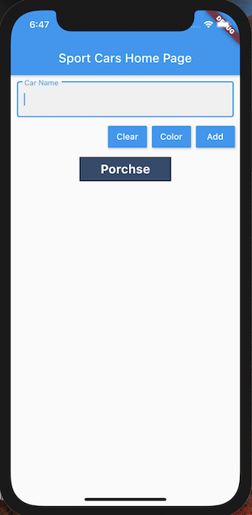
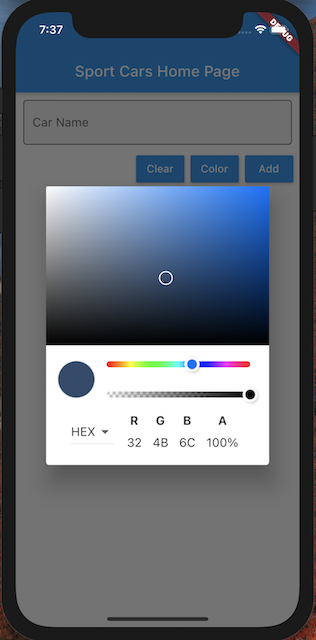

Stateful Widget is mutable. The user interface can change base on user interactions or data. See the Espisode 2 of the Flutter Widget 101.
What you will learn in this codelab:
In Visual Studio Code, create a new Flutter project and name it "sportcars_dyn". This new Flutter project contains the counter application. This MyHomePage widget is a statefull widget. You can rename this MyHomePage Widget to MySportCarsPage Widget. You can use Visual Studion Code replace function to replace MyHomePage to MySportCarsPage. The VS Code replace function can be activate by pressing the Ctrl-Alt-H key sequence in Windows or Shift-Command-H in Mac OS X. You will also need to rename MyHomePageState to MySportCarsPageState.
Port your existing Sport Cars application codes into MySportCarsPage by calling your SportCar Widget in the Column Widget's children widget array. If you have not done so, refactor your SportCar Widget into another file called sportcars.dart. You can cut and past your SportCars class into the sportcars.dart file. In the main.dart file, make sure to import the SportCars from the sportcars.dart by adding an import statement at the top of the main.dart file. Run your application again to ensure that it is still behave the same.
In this step, you will add a text field to allow the user to enter the name of the sport car, a color picker button to select a color, a clear button to clear the text field, and a add button to add the car to your list. You application should look like this when you are done.

Your existing code that contains the sport cars uses the Center Widget to center its content, and the Column Widget to vertically stack each sport cars in a column. In order to properly layout the TextField, and three RaisedButton Widget, we will need to use another Column widget like so.
Column
Container
TextField
ButtonBar
RaisedButton
RaisedButton
RaisedButton
Center
Column
SportCars
The outter Column arrange the container, ButtonBar and the Column widgets vertically so that it layout proportionally in the user interface. You can find information about the TextField, InputDecloraton, ButtonBar and RaisedButton in Flutter documentation. Proceed adding those widget as suggested above without worry about the logic to make the user interface to be interactive. Make sure that you can display the TextField, ButtonBar and RaisedButton widgets. Below are snippets that you can use to fill in your code.
Container:
Container(
margin: const EdgeInsets.only(top: 10, left: 10, right: 10),
),
TextField:
child: TextField(
decoration: InputDecoration(
border: OutlineInputBorder(),
filled: true,
labelText: "Car Name"),
controller: _sportCarNameController,
),
RaisedButton:
RaisedButton(
elevation: 3.0,
onPressed: () {
_sportCarNameController.clear();
},
child: Text('Clear'),
color: Colors.blue,
),
To add plugin into your project, open the pubspec.yaml, and the flutter_colorpicker line below sdk: line. Make sure that the left margin align with the Flutter line above.
dependencies:
flutter:
sdk: flutter
flutter_colorpicker: ^0.3.4
When you save this file, the flutter framework will pull the plugin from pub.dev.
The TextField widget requires a controller to capture the text that the user type. Flutter provides the TextEditingController for this purpose. We will declare a variable like so at the top of your _MySportCarState state class.
class _MySportCartPageState extends State<MySportCartPage> {
TextEditingController _sportCarNameController;
Note that the variable has a null value because we have not create an instance of the TextEditingController yet. To do so, we will initialize it in the initState method.
void initState() {
super.initState();
_sportCarNameController = new TextEditingController();
}
After the controller has been initialize, we have assign it to the TextField widget.
child: TextField(
decoration: InputDecoration(
border: OutlineInputBorder(),
filled: true,
labelText: "Car Name"),
controller: _sportCarNameController,
At this point, when you type something in the text field, the input will be stored in the _sportCarNameController variable.
There are three RaisedButton in the ButtonBar. The first button is ‘Clear'. The second button is ‘Color', and the third button is ‘Add'. In the snippest below, we are adding these buttons to the ButtonBar widget.
ButtonBar(
children: <Widget>[
RaisedButton(
elevation: 3.0,
onPressed: () {
_sportCarNameController.clear();
},
child: Text('Clear'),
color: Colors.blue,
),
RaisedButton(
onPressed: () {
_buildShowDialog(context);
},
elevation: 3.0,
child: Text('Color'),
color: Colors.blue,
),
RaisedButton(
elevation: 3.0,
onPressed: _onAddSportCarOnPressed,
child: Text('Add'),
color: Colors.blue)
],
),
Notice that all three RaisedButton process the onPressed event. The onPressed event property takes a function. the () represents an inline function. For the Clear event, we want to clear the content of the TextEditingController by calling the _sportCarNameController.clear() function. For the Color event, we want to display the color picker dialog. A dialog is a Window that is displayed on top of your application. See the image below.
.
For the ‘Add' event, we want to collect the sport car name, and its color and add them to the list of the sport cars. We have to declare the list first at the top of your MySportCarState class and we also need to define the current color for the color picker.
class _MySportCartPageState extends State<MySportCartPage> {
TextEditingController _sportCarNameController;
var _sportcars = List<Widget>();
Color _currentColor = Colors.yellowAccent;
color_picker dialog:
Future _buildShowDialog(BuildContext context) {
return showDialog(
context: context,
builder: (BuildContext context) {
return AlertDialog(
titlePadding: const EdgeInsets.all(0.0),
contentPadding: const EdgeInsets.all(0.0),
content: SingleChildScrollView(
child: ColorPicker(
pickerColor: _currentColor,
onColorChanged: changeColor,
colorPickerWidth: 300.0,
pickerAreaHeightPercent: 0.7,
enableAlpha: true,
displayThumbColor: true,
showLabel: true,
paletteType: PaletteType.hsv,
pickerAreaBorderRadius: const BorderRadius.only(
topLeft: const Radius.circular(2.0),
topRight: const Radius.circular(2.0),
),
),
),
);
});
}
Add Sport Cars:
void _onAddSportCarOnPressed() {
setState(() {
_sportcars.add(SportCar(_sportCarNameController.text, _currentColor));
_sportCarNameController.clear();
});
}
The last step to make this application work, we have to update the MySportCarState Column widget to the _sportcars list.
child: Column(
mainAxisAlignment: MainAxisAlignment.center,
children: _sportcars,
At this point, re-launch your app, you will be able to dynamically add sport cars.